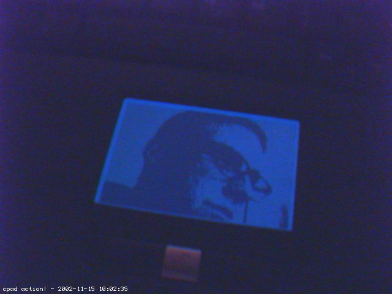
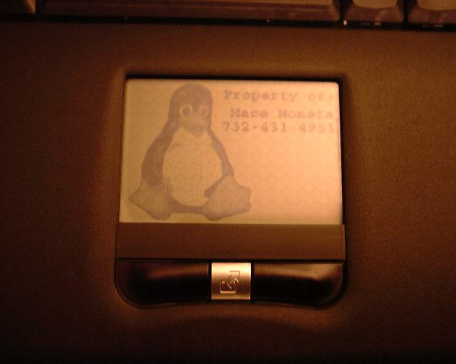
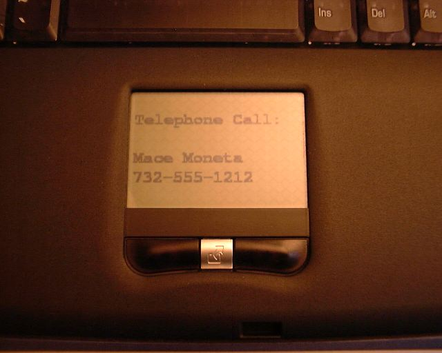
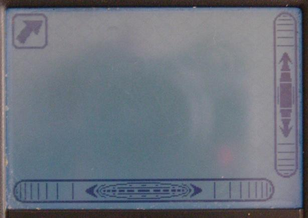
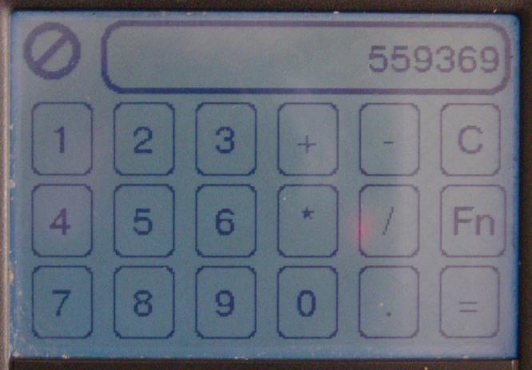

Greg Jones: i am currently working on getting my webcam to write
a picture to an xpm file every second. that and a little bash script to
get the lcd to update once a second should be most amusing ;). also
thinking of flashing lcd for mail, or something similar. and outputing
'fortune' (or 'tail -f /var/log/messages'?) to the lcd.
 Mace Moneta: I'm using it to display incoming callerID information (using John L. Chmielewski's ncidd package, http://pvrhack.sonnik.com/tivo/jlc/ and ImageMagick to create the xpm), with a default graphic and laptop ownership information when idle.
To convert the text to an xpm that can be displayed on the LCD, I use the ImageMagik package (which comes with most distributions) "convert" program. As a requisite, I created a blank 240x160 monochrome xpm and cleverly named it blank.xpm. This is used as the template for the convert as shown in this script fragment:
# # Need a temporary file which will become the new xpm # CPAD="/tmp/`whoami`_cpad.xpm" # # Overlay the blank template with the text in the file whose name is passed in $1 # /usr/bin/X11/convert -font courier-bold -pointsize 24 -draw 'text 0,15 "@'$1'"' -size 240x160 /usr/local/bin/blank.xpm -resize 240x160 -monochrome $CPAD # # Load the xpm into the cPad LCD # /usr/local/bin/usr_cpad -i $CPAD # # Clean up # rm -f $CPAD You can reduce the "pointsize" of the font, if you need to display more text. If the font is small, you probably also want to remove the "-bold" from the font name to keep it legible. You also have the option of putting the text to be converted directly on the convert command line, in the "-draw" parameter. See the convert and ImageMagick man pages for additional details.
To give proper credit, I'm using John L. Chmielewski's ncidd package, http://pvrhack.sonnik.com/tivo/jlc/ to get the telephone callerID information from a remote (network attached) system. That software allows a user script to be invoked when an incoming call is received. An excerpt from my script is shown above.
Here's another handy script, that loads the cPad with
Slashdot headlines. I cron this to run every 5 minutes and load the default image one
minute earlier (so it's 4 minutes of headlines, and one minute of default). You could
use this as the basis to cycle various data sources at regular intervals.
There is a display for load statistics, battery state, acpi info and a nice tux :-)
I added some functions to my scripts. Now it uses two new scripts to use cpu power management (acpi) and displays the actual power consumption. And for an easier use there is a README.txt now.
Get the latest version at his website!

Ron Lee (rtm): This is what you can get if you follow the link to Ron's work. Not yet in a release state, and needs a good deal of
supporting software installed (read: currently recommended only for uber-geeks and debian sid
users), but gives you simultaneous X and gpm support, horizontal and vertical scrollbars, and
hooks for applications like the calculator shown (on top of all the currently supported features).
